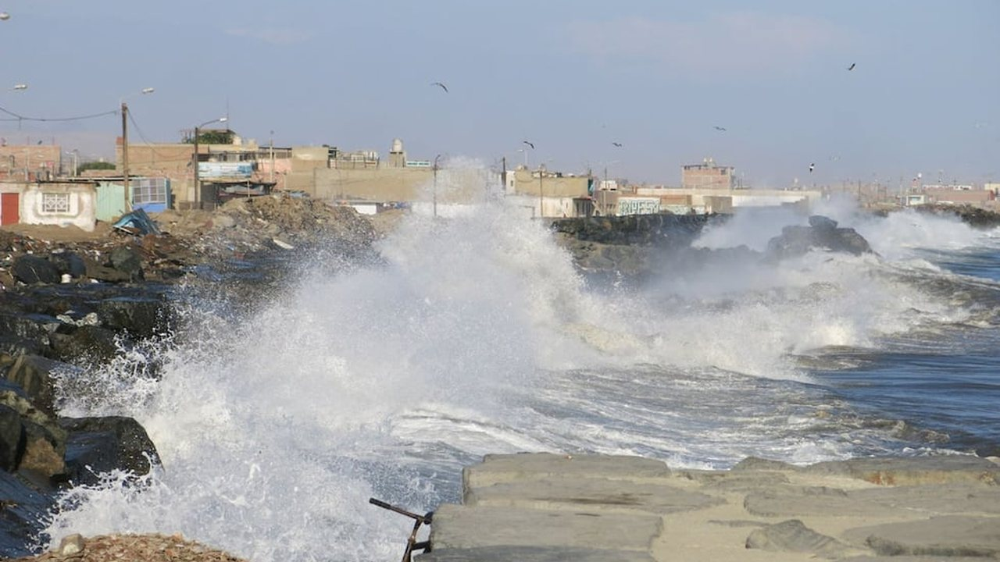
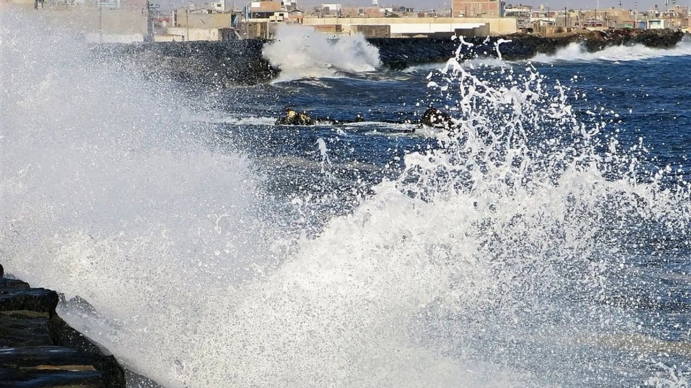

Keiko Fujimori anuncia donaciones de US47 dólares millones de China y Corea para el Perú La mandataria destacó los resultados de su participación en APEC 2026, en Shenzhen, donde también concretó la firma de un acuerdo comercial con Tailandia tras diez años de negociaciones.






Keiko Fujimori anuncia donaciones de US47 dólares millones de China y Corea para el Perú La mandataria destacó los resultados de su participación en APEC 2026, en Shenzhen, donde también concretó la firma de un acuerdo comercial con Tailandia tras diez años de negociaciones.
Según testigos, un camión repartidor de cerveza aparentemente disminuyó su velocidad de forma inesperada y provocó un choque en cadena con otros seis vehículos. Bomberos y la Policía Nacional llegaron de inmediato para atender a los heridos así como realizar las diligencias respectivas.
Agentes policiales custodian a Jolín Bazán Valderrama tras su detención en el interior de una vivienda en Ecuador. La búsqueda de Jolín Bazán Valderrama, señalado como presunto cabecilla de la organización criminal ‘La Jauría’, terminó en Ecuador.
Esto, tras respaldar la postura de la Corte de Apelaciones de Valparaíso que insta al Ministerio de Justicia a “acoger o rechazar” la solicitud de reducción de pena de Víctor Manuel Alarcón Torres, de 54 años, condenado por la violación de una niña.
El estudiante del Programa de Doctorado en Ingeniería y Ciencias Ambientales de la Universidad Nacional Agraria La Molina (UNALM), Blgo. Carlos Castro Cobos, se encuentra analizando bacterias de ambientes termales de los Andes y la Amazonía del Perú para reducir la contaminación causada por derrames de petróleo.
Combinar menestras con cereales, como lentejas con arroz, frejoles con quinua o garbanzos con trigo, permite obtener proteínas de origen vegetal a partir de alimentos nutritivos y económicos. Una porción práctica es de tres cuartos de taza de menestras cocidas y media taza de arroz o quinua cocida.
Estudiantes de la Pontificia Universidad Católica del Perú (PUCP) tomaron las puertas de la institución en protesta por el alza de pensiones y acciones disciplinarias contra compañeros.
Esta disposición se adopta para enfrentar posibles interrupciones en la cadena logística de combustibles, que podrían afectar el transporte, las actividades productivas, el comercio y la prestación de servicios públicos esenciales, como la energía eléctrica.
Nasdaq sube 0.42 por ciento y Dow Jones cae 1.11 por ciento. Al cierre de la jornada, el Nasdaq se situó 24,429 puntos, mientras que el Dow Jones bajó un 1.11 por ciento, hasta las 50 mil 198 unidades, y el S y P 500 cedió un 0.23 por ciento, hasta 7,323 enteros.
Cada edición dura menos de dos minutos. En la web tienes el resumen de cada historia y el enlace directo al medio original para leerla completa.
Conoce Olfatecho →